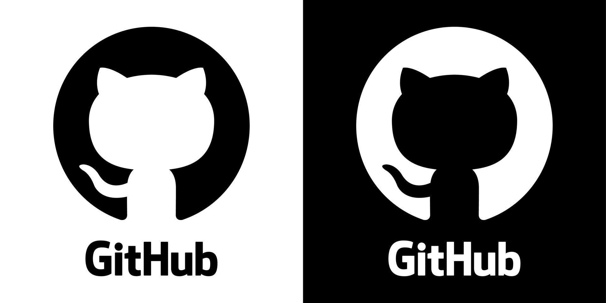

Mi nombre es Percy Molina y soy estudiante de la carrera de Ingeniería de Sistemas
en la Universidad Nacional de San Agustín.
Me considero una persona curiosa, dedicada y apasionada por la tecnología, siempre dispuesta a aprender nuevos conocimientos
y enfrentar desafíos que me permitan crecer tanto personal como profesionalmente.
Me interesa mucho el curso de Introducción al Desarrollo Web porque considero que el desarrollo web
es una de las áreas más dinámicas y demandadas en el campo de la tecnología actual.
Quiero aprender a crear sitios web modernos, interactivos y funcionales que puedan resolver problemas reales.
Además, creo que dominar estas habilidades me abrirá muchas oportunidades profesionales en el futuro
y me permitirá contribuir al mundo digital de manera significativa.
Realicé mis estudios de educación primaria en la Institución Educativa ruarl de cusco,
donde desarrollé mis primeras habilidades académicas y sociales. Posteriormente,
cursé mi educación secundaria en el colegio Libertadores de América, una institución que me brindó una formación integral
y me permitió descubrir mi pasión por las ciencias exactas y la tecnología.
Elegí la carrera de Ingeniería de Sistemas porque desde pequeño me fascinaba el mundo de las computadoras y la tecnología.
Me emocionaba entender cómo funcionan los programas, cómo se crean las aplicaciones y cómo la tecnología puede resolver problemas complejos de manera elegante.
En mi tiempo libre disfruto mucho de diversas actividades que me ayudan a relajarme y seguir aprendiendo.
Me gusta hacer musica y tambien escucharlo.

También practico deportes como el fútbol y futsal,lo cual me ayuda a mantenerme en forma y desarrollar el trabajo en equipo. Además, disfruto viendo series y películas.
Mantengo presencia en varias redes sociales donde casi no publico nada de mi vida.
Uso LinkedIn para conectar con profesionales del área de tecnología y mantenerme actualizado sobre oportunidades laborales.
En GitHub comparto mis proyectos de programación y colaboro en proyectos de código abierto.
También uso Discord para comunicarme con mis compañeros de estudio.